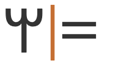
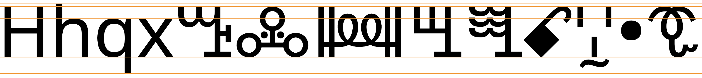
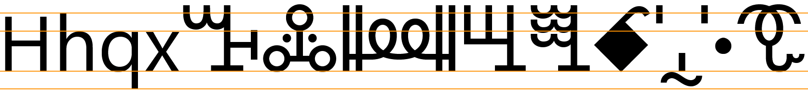

This page brings together basic information about the Vai script and its use for the Vai language. It aims to provide a brief, descriptive summary of the modern, printed orthography and typographic features, and to advise how to write Vai using Unicode.
The Vai language, also called Vy or Gallinas, is a Mande language spoken by the Vai people, numbering roughly 189,000 in Liberia, and around 208,800 in total, including Sierra Leone.esf
The Vai script is used by speakers of the Vai language in coastal areas of western Liberia and eastern Sierra Leone. It is learned informally, and most speakers only use a subset of the syllabic repertoire. There is a market for Vai literature, and it is widely used by traders, as well as for newspapers, tombstones and in traditional rituals; the Bible Society in Liberia and the Institute of Libreian languages also publish in Vaierr.
ꕙꔤvaiVai
There are different theories about the origin of the Vai script. One is that Mɔmɔlu Duwalu Bukɛlɛ dreamt of the symbols after encountering writing on a Portuguese ship in the 1830s, and wrote them down after waking. Another has that it drew inspiration from the Cherokee syllabary, after an number of them migrated to West Africa in the early 1800s. By 1899 most Vai were said to be literate in the script.
The script was standardised after work by Momolu Massaquoi at the University of Liberia and August Klingenheben in the early 1960s.
The Vai script is a moraic syllabary, ie. each symbol typically represents both a consonant and a vowel, but 2 symbols are used for syllables with long vowels or syllables ending with a nasal. See the table to the right for a brief overview of features for the modern Vai orthography.
Vai runs left to right in horizontal lines.
Words are separated by spaces.
Vai has around 270 syllables, each represented by unique characters. Although some glyphs representing a common place of articulation are related, there is no referable derivation of form or predictable application of diacritics.s❯ characters
Many people literate in the script find around 50 characters sufficient for most of their needs.s
The language is tonal, but the tones are not written.
Vowels can be lengthened using a special symbol, or by following the vowel with as syllable beginning with h- (which creates ambiguity). ❯ vowelextension
Older texts used several logograms, 2 of which are still in use, but infrequently. ❯ logograms
ASCII digits are used. A set of Vai digits were proposed but never used. ❯ numbers
Some Vai-specific punctuation exists, but ASCII punctuation is also used. ❯ phrase
Click on the sounds to reveal locations in this document where they are mentioned.
Phones in a lighter colour are non-native or allophones. Source Wikipedia.
Vowel sounds
Observation: Rovenchak et al. say that ĩ and ũ are each represented by a single syllabic sign and of dubious relevance, and that some papers on Vai omit themrmr,2. However, the following syllabic signs are allocated to those sounds:
ꔧ␣ꕆ␣ꕇ␣ꕈ␣ꔩ␣ꖘ␣ꖷ␣ꖸ␣ꖹ␣ꖚ
Consonant sounds
labial
alveolar
post-
alveolar
palatal
velar
glottal
plosive
pbk͡pɡ͡b
td
kɡ
implosive
ɓ
ɗ
affricate
t͡ʃd͡ʒ
prenasalised
ᵐɓᵐɡ͡b
ⁿɗ
ᶮd͡ʒ
ᵑɡ
fricative
fv
sz
ʃʒ
h
nasal
m
n
ɲ
ŋ
approximant
w
l
j
trill/flap
r
Some sources use c and ɟ rather than d͡ʒ and t͡ʃ. Welmers describes these sounds as 'best described as' voiced palatal stops because there is very little affrication in their releasew,5.
He also reports that some people pronounce initial l as ɗ.w,5
w before on of i e ɛ is rare, and tends towards ʋw,5.
Observation: Sounds not listed in the sources but for which there are syllabic characters include ᵐɓ ⁿɗ.
Tone
Vai has 4 tones, 2 level and 2 contoured. They are:
˦
́
high
˨
̀̀
low
˦˨
̂
falling
˨˦
̌
rising
Tones are not marked in the Vai orthography, although this doesn't often create ambiguityd,596. They do, however, tend to be marked using the accent marks in transcriptions.
Structure
The spoken language adheres strictly to the following pattern for syllables:s
(C)V(N)
Script symbols represent mora, rather than full syllables. Long vowels, diphthongs and syllables ending in n are all represented using two characters.s
There can be some variation in the way long vowels and diphthongs are divided into syllables, and therefore written.s
Alphabet
The syllable set for Vai can be ordered in various ways. That used for the Unicode Standard orders syllables by vowel first, then by consonanterr. The order corresponds to following columns from top to bottom, with lines progressing from left to right, in the table layout shown below. That ordering tends to bring together shapes that are similar in appearance.
In a few cases there are extra lines for syllables that end with nasalisation (indicated by ˜).
e
i
a
o
u
ɔ
ɛ
ꔀ
ꔤ
ꕉ
ꕱ
ꖕ
ꖺ
ꗡ
˜
ꔁ
ꔥ
ꕊ
ꕲ
ꖖ
ꖻ
ꗢ
ŋ
ꕋ
ꖼ
ɡ
h
ꔂ
ꔦ
ꕌ
ꕳ
ꖗ
ꖽ
ꗤ
h˜
ꔧ
ꕍ
ꖘ
ꖾ
ꗥ
w
ꔃ
ꔨ
ꕎ
ꕴ
ꖙ
ꖿ
ꗦ
w˜
ꔄ
ꔩ
ꕏ
ꕵ
ꖚ
ꗀ
ꗧ
p
ꔅ
ꔪ
ꕐ
ꕶ
ꖛ
ꗁ
ꗨ
b
ꔆ
ꔫ
ꕑ
ꕷ
ꖜ
ꗂ
ꗩ
ɓ
ꔇ
ꔬ
ꕒ
ꕸ
ꖝ
ꗃ
ꗪ
mɓ
ꔈ
ꔭ
ꕓ
ꕹ
ꖞ
ꗄ
ꗫ
kp
ꔉ
ꔮ
ꕔ
ꕺ
ꖟ
ꗅ
ꗬ
kp˜
ꕕ
ꗭ
mɡb
ꔊ
ꔯ
ꕖ
ꕻ
ꖠ
ꗆ
ɡ
ɡb
ꔋ
ꔰ
ꕗ
ꕼ
ꖡ
ꗇ
ꗯ
ɡb˜
ꗈ
ꗰ
f
ꔌ
ꔱ
ꕘ
ꕽ
ꖢ
ꗉ
ꗱ
v
ꔍ
ꔲ
ꕙ
ꕾ
ꖣ
ꗊ
ꗲ
t
ꔎ
ꔳ
ꕚ
ꕿ
ꖤ
ꗋ
ꗳ
θ
ꔏ
ꔴ
ꕛ
ꖀ
ꖥ
ꗌ
ꗴ
d
ꔐ
ꔵ
ꕜ
ꖁ
ꖦ
ꗍ
ꗵ
ð
ꔑ
ꔶ
ꕝ
ꖂ
ꖧ
ꗎ
ꗶ
l
ꔒ
ꔷ
ꕞ
ꖃ
ꖨ
ꗏ
ꗷ
r
ꔓ
ꔸ
ꕟ
ꖄ
ꖩ
ꗐ
ꗸ
ɗ
ꔔ
ꔹ
ꕠ
ꖅ
ꖪ
ꗑ
ꗹ
nɗ
ꔕ
ꔺ
ꕡ
ꖆ
ꖫ
ꗒ
ꗺ
s
ꔖ
ꔻ
ꕢ
ꖇ
ꖬ
ꗓ
ꗻ
ʃ
ꔗ
ꔼ
ꕣ
ꖈ
ꖭ
ꗔ
ꗼ
z
ꔘ
ꔽ
ꕤ
ꖉ
ꖮ
ꗕ
ꗽ
ʒ
ꔙ
ꔾ
ꕥ
ꖊ
ꖯ
ꗖ
ꗾ
ʧ
ꔚ
ꔿ
ꕦ
ꖋ
ꖰ
ꗗ
ꗿ
ʤ
ꔛ
ꕀ
ꕧ
ꖌ
ꖱ
ꗘ
ꘀ
nʤ
ꔜ
ꕁ
ꕨ
ꖍ
ꖲ
ꗙ
ꘁ
j
ꔝ
ꕂ
ꕩ
ꖎ
ꖳ
ꗚ
ꘂ
k
ꔞ
ꕃ
ꕪ
ꖏ
ꖴ
ꗛ
ꘃ
k˜
ꕫ
ŋɡ
ꔟ
ꕄ
ꕬ
ꖐ
ꖵ
ꗜ
ꘄ
ŋɡ˜
ꘅ
ɡ
ꔠ
ꕅ
ꕭ
ꖑ
ꖶ
ꗝ
ꘆ
ɡ˜
ꘇ
m
ꔡ
ꕆ
ꕮ
ꖒ
ꖷ
ꗞ
ꘈ
n
ꔢ
ꕇ
ꕯ
ꖓ
ꖸ
ꗟ
ꘉ
ɲ
ꔣ
ꕈ
ꕰ
ꖔ
ꖹ
ꗠ
ꘊ
Syllables
Vai syllables are typically displayed as a table (see alphabet). Here we follow our usual practice of ordering symbols by sound.
Vowel syllables
The following represent sounds for standalone vowels.
ꔤ␣ꖕ␣ꔀ␣ꕱ␣ꗡ␣ꖺ␣ꕉꔥ␣ꖖ␣ꔁ␣ꕲ␣ꗢ␣ꖻ␣ꕊ
The four nasalised characters marked as infrequent enable the representation of foreign vowel sounds, such as in personal names, in other languages of Liberia such as Loma, which has all six vowels ẽ ĩ ã õ ũ ɔ̃ ɛ̃, Kpelle (the largest
language group in Liberia) and Mende, which each have five vowels: ẽ ĩ ã ũ ɔ̃ ɛ̃. They do not naturally exist in Vai, and local people will find it difficult to pronounce themenrs.
These standalone vowels are commonly used for word-initial standalones: apart from loan words, this essentially means interjections, conjunctions, and especially pronouns.d,594 They may also be used for diphthongs, although not always (see also vowelextension).
Long vowels & diphthongs
The most common way to indicate a long vowel is to follow the vowel with a syllable with that begins with h and echoes the same soundws, eg. the following word is written using symbols for ta and ha:
ꕚꕌ
Because it introduces ambiguity, texts using this approach are difficult to automatically convert from a Latin transcription to Vai characters.
A word containing a standalone vowel that doesn't appear at the beginning will commonly also use a CV letter. For example, syllable beginning with w is used, for the followingd,594, eg.
ꕞꖏꕎ
ꘌ
ꘌ [U+A60C VAI SYLLABLE LENGTHENER] may be used to indicate that the vowel in the preceding syllable character is lengthened, eg.
ꕚꘌ
Consonant-vowel syllables
The core of the script is a set of CV syllables, however the set shown here includes symbols that were added to support the sounds of other languages, or to fill gaps. Not all the symbols will be used, or even recognised, by all native Vai readerserr.
The consonant ŋ between like vowels has largely disappeared from spoken Vai, leaving nasalised vowels instead, but words continue to be written using the nasal syllabled,596, eg.
ꕪꕋ
Phonological change in Vai tends to drop the 'l' sound when word-medial, creating a long vowel, although this depends on geography to an extent, eg. the word for 'moon' can be appear as any of the following:
ꕪꖃꕪꕴꕪꕱ
Final consonants & syllabic nasal
ꘋ
ꘋ [U+A60B VAI SYLLABLE NG] usually represents the syllable-final nasal, which is the only syllable-final consonant in Vai (and iis regarded as a mora), eg.
ꔖꘋ
Due to assimilation processes, the syllable-final nasal is not always pronounced as a velar nasal, but is affected by the following consonant. It is, however, always written in the same wayd,594.
It is also used as a syllable to represent the first-person singular
ꘋ
Tones
Although Vai is a tonal language, tone is not represented in the script.s
Historical syllables
From Wikipedia: "One of Momolu Duwalu Bukele's cousins, Kaali Bala Ndole Wano, wrote a long manuscript around 1845 called the Book of Ndole or Book of Rora under the pen name Rora. This roughly fifty page manuscript contains several now obsolete symbols"ws
ꘐ␣ꘑ␣ꘒ␣ꘪ␣ꘫ
"Originally there were separate glyphs for syllables ending in a nasal, such as don, with a long vowel, such as soo, with a diphthong, such as bai, as well as bili and sɛli. However, these have been dropped from the modern script."ws
This section brings together information about the following topics:
writing styles;
cursive text;
context-based shaping;
context-based positioning;
baselines, line height, etc.;
font styles;
case & other character transforms.
Vai has no context-based shaping or positioning, and is not cursive. There is no case, or any other character transform that applications need to support.
Font styling & weight
tbd
Graphemes
Since there are no combining marks or decompositions, grapheme clusters correspond to individual characters.
Grapheme clusters
Syllable
Each letter is a grapheme cluster, and there are no combining marks to extend them.
Click on the text version of this word to see more detail about the composition.
ꕙꔤ

ꕚꘌ
ꔖꘋ
Punctuation & inline features
Word boundaries
The concept of 'word' is difficult to define in any language (see What is a word?). Here, a word is a vaguely-defined, but recognisable semantic unit that is typically smaller than a phrase and may comprise one or more syllables.
In modern printed Vai, spaces commonly appear around words.
There is, however, another tradition where Vai is written without inter-word spacing, although Vai literates report that this makes it harder to read Vai than to write it, although Singler reports that script conventions and distributional patterns help a littled,596.
Phrase & section boundaries
,␣꘍␣:␣;␣.␣꘎␣?␣꘏␣!␣꘎꘎
Vai uses ASCII punctuation, but also has a few distinct punctuation marks of its own. The choice of which to use is down to the author's preference, although the Vai question mark is quite rare.err,2
By default, lines can be broken at inter-word spaces, but Everson et alerr,6. provide additional rules. Essentially, a line can be broken after any syllable, with the following exceptions:
ꘋ [U+A60B VAI SYLLABLE NG] must not start a line if it is a syllable-final, but it can start a line if it represents the first-person singular pronoun.
A vowel that is lengthened by the addition of an hV syllable, where the vowel echoes that of the previous syllable, should not be split. However, a word containing 2 syllables where the vowel doesn't echo the former syllable can be split, eg. compare the following, where the first cannot be broken, but the second can:
ꕇꔦꕙꔤ
Observation: It is not clear whether words can be broken at syllable boundaries in text where words are separated by spaces, or whether these rules apply to text without inter-word spacing, or both.
Observation: An application that applies these rules will need to distinguish between a following hV syllable that extends a word, and another that is a syllable in its own right. Presumably, this will require looking up words in a dictionary.
Observation: Current browser behaviour doesn't split on syllable boundaries – only on spaces.
This section looks at ways in which spacing is applied between characters over and above that which is introduced during justification.
Baselines, line height, etc.
Vai uses the so-called 'alphabetic' baseline, which is the same as for Latin and many other scripts.
Vai has no combining marks above or below the line. Most characters are the same height, and only syllables starting with r extend below the baseline.
To give an approximate idea, fig_baselines compares Latin and Vai glyphs from a Noto font. The maximum height of Vai letters is around the Latin cap-height. Only one set of syllable glyphs occupies space below the baseline, but they don't exceed the Latin descenders.

Font metrics for Latin text compared with Vai glyphs in the Noto Sans Vai font.
fig_baselines_other shows similar comparisons for the Ebrima font. although in this case the standard height of the Vai glyphs is slightly higher than the Latin ascenders.

Latin font metrics compared with Vai glyphs in the Ebrima font.
Counters, lists, etc.
tbd
Styling initials
tbd
Page & book layout
This section is for any features that are specific to Vai and that relate to the following topics:
general page layout & progression;
grids & tables;
notes, footnotes, etc;
forms & user interaction;
page numbering, running headers, etc.